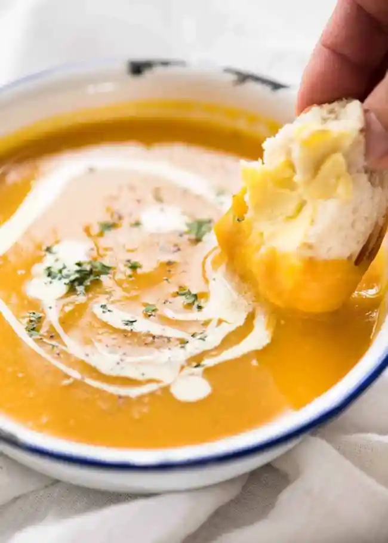

Pumpkin Soup

Description
Classic, healthy, golden pumpkin soup!
- 2 tbsp olive oil
- 2 onions, finely chopped
- 1kg pumpkin or squash (try kabocha), peeled, deseeded and chopped into chunks
- 700ml vegetable stock or chicken stock
- 150ml double cream
For the Croutons
- 2 tbsp olive oil
- 4 slices wholemeal seeded bread, crusts removed
- handful pumpkin seeds
Method
-
Heat 2 tbsp olive oil in a large saucepan, then gently cook 2 finely chopped onions for 5 mins, until soft but not coloured
-
Add 1kg pumpkin or squash, cut into chunks, to the pan, then carry on cooking for 8-10 mins, stirring occasionally until it starts to soften and turn golden.
-
Pour 700ml vegetable or chicken stock into the pan and season with salt and pepper. Bring to the boil, then simmer for 10 mins until the squash is very soft.
-
Pour 150ml double cream into the pan, bring back to the boil, then purée with a hand blender. For an extra-velvety consistency you can pour the soup through a fine sieve. The soup can now be frozen for up to 2 months.
-
To make the croutons: cut 4 slices wholemeal seeded bread into small squares.
-
Heat 2 tbsp olive oil in a frying pan, then fry the bread until it starts to become crisp.
-
Add a handful of pumpkin seeds to the pan, then cook for a few mins more until they are toasted. These can be made a day ahead and stored in an airtight container.
-
Reheat the soup if needed, taste for seasoning, then serve scattered with croutons and seeds and drizzled with more olive oil, if you want.